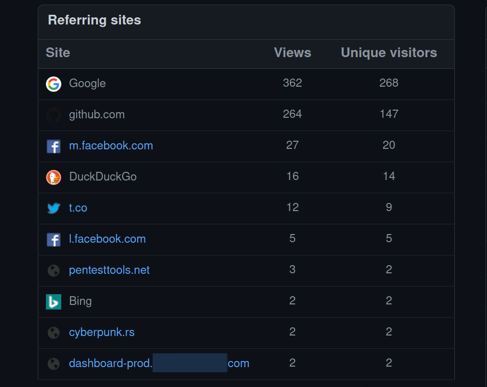
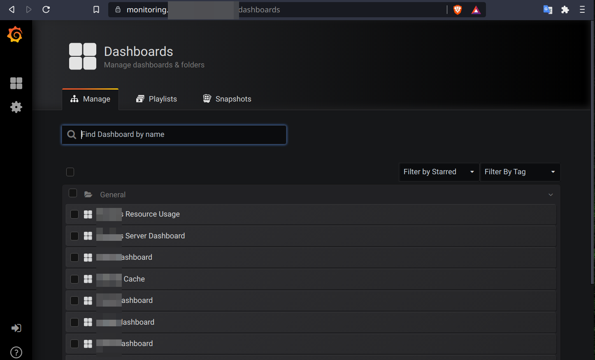
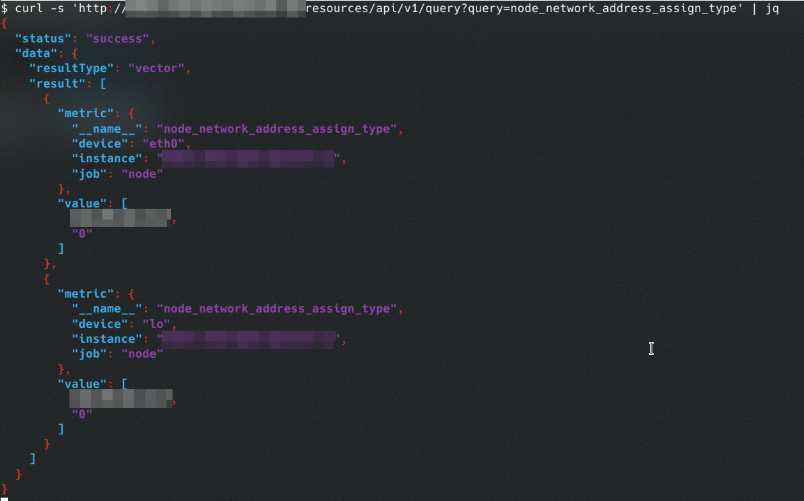

6 minutes
Pwning a Backend with a Backdoor

Development is a important task. But mindful secure development is much more important. In this quick blog post, I detail an unusual way in which I was able to escalate access to several production instances behind a properly secured network.
How it started.
It all started with me casually checking some traffic data for a tool I authored on GitHub. GitHub allows you to view a few stats for the past 14 days, viz. visitors, clones, etc on a repository.
A particularly interesting referring site URL caught my attention:
How do you resist yourself from a temptation like this? Anyways, I took the bait and started digging.
The first thing that I always do in these situations is to verify whether or not my target site has a security contact. This is very important to avoid stepping into legal trouble. Luckily, this one had an independent VDP running, so I decided to proceed forward.
An obvious question that arises here is how did this particular URL land on the stats page? Its obvious that someone clicked a link to this repository from some “dashboard”. To my understanding, GitHub accumulates these traffic stats from the Referer header sent from the browser, which contains the URL of the previous web-page from where the request originated. So its fairly safe to assume that they have some sort of “dashboards” which contain links to be clicked.
Mapping the target.
I spent the next half an hour trying to map the target. A quick nmap fast scan on the IP at which it was pointing to yielded two open ports, both running HTTP — 3000, 8008. My immediate presumption was Grafana — since 3000 is usually the default port for Grafana instances. However, it turned out that it was not quite the case. Visiting http://redacted.com:3000 in the browser landed me nowhere, the browser simply showed a “Too Many Redirects” error. I figured that it was probably a production instance so it was secured properly behind ACLs.
I decided to quickly spin up ffuf and do some basic content enumeration for port 8008 (bruteforce-database is one of my favorites when it comes to content discovery on production servers). Few minutes later, here’s what I saw looking at the terminal:
Interesting right, lets visit the path in our browser? I was surprised when I got redirected couple of times and I landed on this page on an entirely different subdomain at https://monitoring.redacted.com/dashboards.
Fiddling around a bit, but carefully, I figured that I was logged in with admin privileges. I could delete dashboards, create/delete new playlists and snapshots, and of course view sensitive monitoring data of several production servers. Adding to this, the dashboard also revealed an associated proxied Prometheus REST API that was totally unauthenticated. I wasn’t familiar with PromQL before, so after reading about it, I figured that I could extract much more sensitive data via the API:
It was at this moment I stopped testing and decided to report my findings to the security contact email.
But wait, what happened there?
Web-apps often fascinate me when it comes to the weird intricacies I encounter. This one was no exception and really caught my attention. I decided to dig deeper into what could’ve triggered this behavior. Long story short, I concluded that the /cont_useradmin/ path somehow acted like a proxy which gave me authenticated access to their internal VPN, which is why I was able to directly access the Grafana monitoring dashboards with admin privileges. Authenticated — because few additional headers somehow got added with the default set of headers in the request:
However, this wasn’t clearly satisfying my curiosity so I courteously asked the security contact to let me know what exactly caused this behavior. Within a few days, I received a response back that they’ve patched the issue and passed me a developer contact from whom I can get my questions answered. Exchanging a few words with him, I could finally get the whole picture of what was going on.
It turned out that it was indeed an intentionally introduced developer backdoor that I accessed. The actual cause of this was the misconfigured nginx server on port 8008 that allowed the developer (implying anyone) to directly access the production environment for debugging purposes. He was open enough to admit that he directly implemented the config file from an answer on an online forum without actually understanding the security context of the scenario.
The nginx.conf file of the HTTP server looked like this:
user www-data;
worker_processes 1;
error_log /var/log/nginx/error.log;
pid /var/run/nginx.pid;
events {
worker_connections 1024;
}
...snip...
http {
include /etc/nginx/mime.types;
access_log /var/log/nginx/access.log;
sendfile on;
keepalive_timeout 65;
tcp_nodelay on;
server {
listen *:8008;
access_log /var/log/nginx/access.8008.log;
location /cont_useradmin/ {
rewrite /cont_useradmin(.*) $1 break;
proxy_pass http://172.20.0.1:60000;
proxy_redirect off;
proxy_set_header Host $host;
proxy_set_header X-Forwarded-For $proxy_add_x_forwarded_for;
proxy_set_header X-Ingress-Token e44c571c-e313-4720-80ed-ee13ed4eebe4
}
}
}
...snip...
Already noticed what wrong? Let me break it down anyways. The configuration forwards any request to the /cont_useradmin/ endpoint on port 8008, to the internal IP 172.20.0.1:60000 with the X-Ingress-Token authentication header. The port 60000 was hosting an internal router daemon that mapped all their internal production endpoints. The router wasn’t publicly accessible and accepted connections from specific whitelisted IPs with proper authentication, i.e. the X-Ingress-Token header, which the developer had intentionally embedded into the nginx config.
Now that the router saw I was authenticated and was trying to access the dashboard-prod subdomain it redirected me to the Grafana instance as per its mapping configuration. Moreover all requests via the router were whitelisted explicitly, implying that I was essentially acting as an administrator.
The developer explained that it was a self-hosted Jira board from which the link to my GitHub repository originated. The router by default maps all outbound HTTP traffic from their internal HTTP endpoints via the dashboard-prod subdomain which I saw in my stats page on GitHub.
Takeaways
For Developers
Development is indeed a tough task, but securing things is far more important. Even though the developers took considerable measures to secure their production environment by putting it behind a VPN, I was still able to access their internal network via a simple misconfiguration. Developer backdoors are cool and allows quick access, but it might be fatal if anyone else discovers it — due to the elevated level of privileges they usually have.
It is also a good practice to implement access control in several places. In this case, every service that the router mapped — should’ve had additional authentication which essentially prevents lateral movement. I could have probed the router with queries to find more sensitive services thereafter and hence could’ve compromised their internal network. Imagine how such a simple mistake could lead to such devastating results.
Here’s a fun quote from Somdev who reviewed this article (thanks to him!):
Back-ends with back-doors are just front-doors.
For Security Folks
Never settle for less. Always look out for weird behavior in web-apps and try messing around with it. You might find things where you’re least expecting it.
That’s it! With good food for thought, I hereby conclude. Until next time. Cheers! 🥂
1178 Words
2021-05-31 00:00